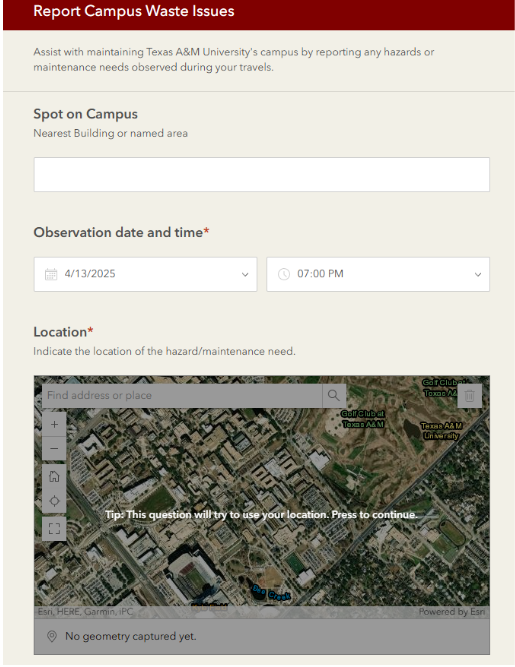

Tracking Trash Trends at Texas A&M
To solve the problem of overflowing trash bins on campus, our team developed a real-time reporting and visualization system using ESRI Field Maps and ArcGIS Online. This solution allows students, staff, and faculty to submit geotagged reports of full or problematic waste bins directly from their mobile devices. These submissions instantly appear on a live map, creating a dynamic and continuously updated overview of waste accumulation across campus. Campus groundskeeping staff can use this map to prioritize clean-up efforts, identify recurring hotspots, and track the status of reported areas. Additionally, our system supports data analysis over time, enabling the university to make informed decisions—such as adding more bins in high-traffic areas or adjusting maintenance schedules. By combining community participation with powerful mapping technology, our project creates a smarter, cleaner, and more responsive waste management strategy for Texas A&M.
